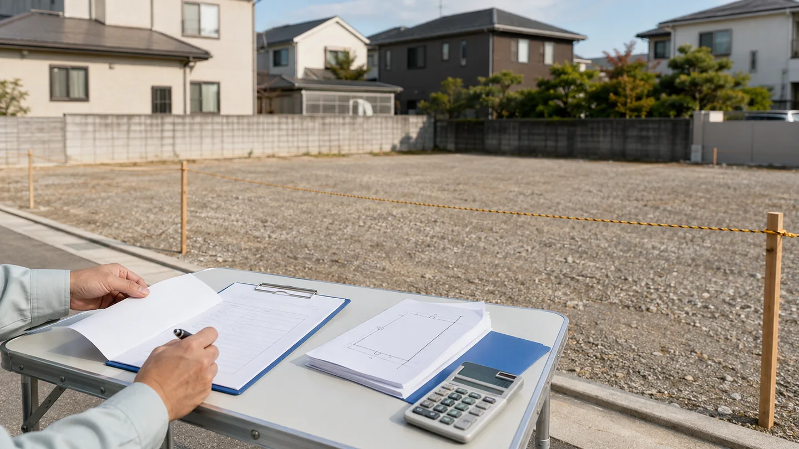
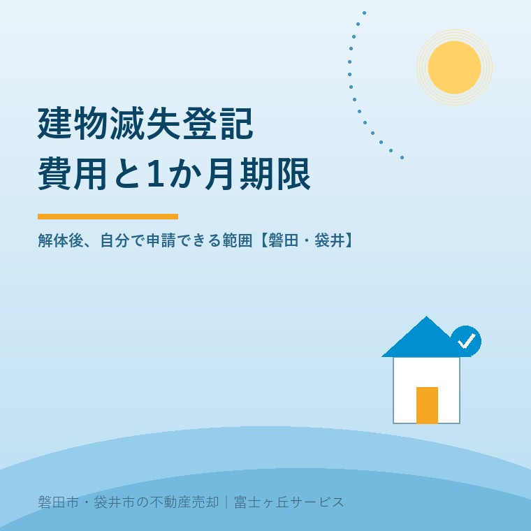

2026年9月8日｜カテゴリ：登記／解体／売却実務


この記事の要点
Q. 建物滅失登記の費用は何円で、解体後いつまでに申請しますか。
A. 法務局へ納める登録免許税は0円です。本人申請なら書類取得、郵送、交通などの実費が中心です。土地家屋調査士へ頼む報酬は全国一律でないため見積りを取ります。期限は建物がなくなった日から1か月以内です。解体前に取壊証明書の名義と発行時期を業者へ確認してください。
磐田市・袋井市・森町では、解体見積りの段階で証明書の発行者を確認し、工事完了後は登記名義と現地を照合してから本人申請か専門家依頼かを選べます。
実家の解体工事が終わっても、登記簿の建物は自動では消えません。持ち主の手元では、解体代の精算と建物滅失登記の準備が同時に始まります。
費用を調べると「0円」と「5万円前後」が並びます。矛盾ではありません。0円は登録免許税の話で、土地家屋調査士へ頼む報酬や、本人が動く実費とは別です。
法務省の2026年8月3日版手引き、不動産登記法、登録免許税法、法務局の申請案内、日本土地家屋調査士会連合会の令和7年度報酬統計を2026年9月8日に確認しました。
建物滅失登記では、法務局へ納める登録免許税はかかりませんが、書類取得や郵送などの実費と専門家報酬は別に考えます。
登録免許税法第2条は、別表第一に掲げる登記等を課税対象にします。同表に建物滅失登記は列挙されていません。だから、売買の所有権移転登記のように税率を掛ける計算はありません。
| 費用の箱 | 確認できる数字 | 売主の見方 |
|---|---|---|
| 登録免許税 | 0円 | 法務局へ納める税。手続全体の費用とは別 |
| 本人申請の実費 | 案件ごと | 証明書、郵送、交通、オンライン環境などを合計 |
| 土地家屋調査士報酬 | 全国中央値5万円 静岡県中央値5万2,000円 | 令和7年度の設定事例への回答。統一料金ではない |
日調連の令和7年度実態調査では、建物滅失登記の報酬中央値は全国5万円、静岡県5万2,000円でした。平均は全国5万2,132円、静岡県5万5,713円です。
この設問は、主建物と附属物置、取壊証明書あり、現場や法務局までの距離などを設定した一例です。最低額から最高額まで幅があり、実際の請求額を保証しません。建物数、名義、証明書、現地確認、消費税や実費を含む見積りが必要です。
意外なのは、全国と静岡県の中央値の差が2,000円しかないことです。この差だけで依頼先を選ぶより、証明書不足や登記と現地の食い違いを誰が調べるかを見るほうが、持ち主の負担を正しく比べられます。
不動産登記法第57条は、表題部所有者または所有権登記名義人に、建物の滅失日から1か月以内の申請を求めています。
同法第164条は、正当な理由なく第57条の申請を怠った場合を10万円以下の過料対象とします。31日目に全員へ自動で10万円が請求される、という書き方は正確ではありません。
だからといって期限を飾りにしてよいわけでもありません。解体後の土地を売るとき、現地には家がないのに登記簿には建物が残る状態を、買主や金融機関へ説明する手間が増えます。
| 解体日を0日とした目安 | すること |
|---|---|
| 解体前 | 取壊証明書の発行者、法人名、会社法人等番号を業者へ確認 |
| 0～7日 | 証明書を受け取り、登記事項証明書の所在・家屋番号・名義と照合 |
| 8～14日 | 本人申請か土地家屋調査士への依頼かを決定 |
| 15～30日 | 管轄法務局へ申請し、補正連絡に対応できる状態を保つ |
期限を過ぎていることに気づいたら、さらに待つ理由はありません。解体日、建物の登記、証明書の有無をそろえ、管轄法務局か土地家屋調査士へ事情を伝えます。
法務省は2026年8月3日、オンライン申請用の「申請情報作成例③【建物の滅失登記編】」を第1.6版へ更新しました。
指定ページにある手引きは、専用の「申請用総合ソフト」向けです。オンライン版は第1.6版ですが、QRコード付き書面申請版は同日更新の第1.5版です。全申請例が第1.6版になったわけではありません。
版の更新は、1か月期限や登録免許税が2026年8月3日に変わったという意味でもありません。公開ページには改定箇所の説明がないため、日付だけから制度変更を推測しないことが安全です。
法務局は、個人の所有者がマイナンバーカードとICカードリーダライタを使うオンライン申請を案内しています。オンライン環境がない場合は書面申請を使えます。
オンライン送信で証明書原本が全て不要になるとは限りません。添付情報を書面で出す特例方式では、受付日の翌日から数えて2営業日以内に、持参または書留郵便等で提出する案内があります。
所有者本人は建物滅失登記を申請できますが、登記名義、建物、取壊日、証明書が素直に一致するかを先に見ます。
法務省の作成例は、個人所有者1名、建物1個の取壊しという想定です。建物の所在、家屋番号、種類、構造、床面積、滅失原因と日付、申請人を入力し、滅失証明情報を添えます。
| 本人申請を検討しやすい | 先に法務局・土地家屋調査士へ確認 |
|---|---|
| 登記名義人本人が申請する | 登記名義人が亡くなっている、住所のつながりが取れない |
| 取り壊した一棟を登記で特定できる | 主建物と附属建物、一部取壊し、共有の判断が要る |
| 解体業者の取壊証明書がそろう | 業者が廃業し、証明書や印鑑関係書類が取れない |
| 登記と現地の表示が一致する | 家屋番号、床面積、棟数などが現地と合わない |
法人の解体業者なら、会社法人等番号によって一部書類を省略できる場合があります。一律に省略できると決めず、取壊証明書と一緒に何を受け取るかを管轄法務局へ確認します。
そもそも建物が未登記なら、消す登記記録がありません。市への届出など別の確認が要るため、未登記建物を売却前に確認する手順と区別してください。
表示に関する登記の調査、書類作成、申請代理を報酬を受けて行う専門家は土地家屋調査士です。所有権移転など権利の登記を扱う司法書士と、依頼先を混同しません。
法務省の更新された申請例の良い点は、所有者本人が入力から登記完了証の受領までを追えることです。
書面申請という選択も残っています。単純な一棟で資料がそろうなら、土地家屋調査士へ必ず依頼しなければならない制度ではありません。
その上で注文があります。手引きを解体後に探すより、取壊証明書を誰の名義でいつ出すかを、工事契約前に決める説明が要ります。建物が消えてから証拠を集め直すと、0円だったはずの手続に時間が積み上がります。
「自分でやれば0円」は雑です。0円なのは登録免許税です。持ち主の移動、書類の取り直し、平日の連絡まで0円ではありません。
大石浩之（磐田市／不動産業）として、私は本人申請をどこまで勧めるか迷います。単純な案件なら費用を抑えられます。一方、名義人が亡くなっていたり、附属建物が残ったりする案件では、安さを優先して1か月を使い切ることがあります。私は、見積額だけでなく不足書類と補正の回数まで費用として比べます。
磐田市・袋井市・森町で実家を解体するなら、工事前に登記事項証明書、固定資産税通知書、所有者の連絡先を解体業者と媒介会社へ示します。
実家の解体費用と壊した後の税金を比べる段階で、見積書へ「取壊証明書の発行」を入れてください。名称、発行者、発行予定日も確認します。
着工前には石綿の事前調査も別に要ります。費用と資格者の範囲は、空き家解体とアスベスト費用で解体前の順番を説明しています。
富士ヶ丘サービスでは、解体するか古家付きで売るかを査定で比べます。解体を選ぶ場合は、道路、境界、名義、残置物、建物登記を一枚へ整理し、表示登記の個別判断は土地家屋調査士へつなぎます。
今日できるのは、解体業者への一通の連絡です。「建物取壊証明書は誰の名義で、完了後何日に発行されますか」と聞く。売却を急いで決めなくても、1か月の最初の一歩を解体前に終えられます。
法務局へ納める登録免許税はかかりません。本人申請なら登記事項証明書などの取得、郵送、交通、オンライン環境などの実費を見ます。土地家屋調査士へ依頼する場合、令和7年度調査の静岡県の中央値は5万2,000円ですが、固定価格ではありません。個別の見積りを確認してください。
期限を過ぎても、登記記録を残したままにせず申請準備を進めます。不動産登記法第164条は、正当な理由なく申請を怠った場合を10万円以下の過料対象とします。31日目に自動で10万円が課される規定ではありません。事情と必要書類を管轄法務局または土地家屋調査士へ確認してください。
所有者本人による申請は可能です。登記名義、建物、取壊日、証明書が素直に一致する一棟なら、書面またはオンラインを検討できます。相続、共有、附属建物、一部取壊し、証明書が取れない場合、登記と現地が違う場合は、申請人や登記内容を管轄法務局または土地家屋調査士へ確認してください。

この記事を書いた人：大石浩之（宅地建物取引士）
磐田市で不動産業と介護事業を営み、実家の解体と売却について、名義、道路、境界、残置物、建物登記の段取りを整理します。表示登記の個別判断は土地家屋調査士へつなぎ、売主とご家族が1か月の期限で困らない準備を考えます。プロフィール
ふじがおか実家カルテ｜固定資産税通知書だけでも相談可
解体前に、建物登記まで一枚へ。
古家付き売却と解体後売却を比べ、名義、建物、道路、境界、残置物を整理します。滅失登記の専門判断は土地家屋調査士へつなぎます。
本記事は2026年9月8日時点の公表資料に基づく一般的な説明です。申請人、添付情報、登記原因日、本人申請の可否、登録免許税、専門家報酬、相続・共有・未登記の扱いは個別事情で変わります。税務、登記、相続、契約の個別判断は、税理士、土地家屋調査士、司法書士、弁護士、管轄法務局などの専門家に確認してください。
富士ヶ丘サービス株式会社／静岡県磐田市見付5789番地1／TEL:0538-31-3308／静岡県知事 (2) 第14083号／代表取締役・宅地建物取引士 大石 浩之